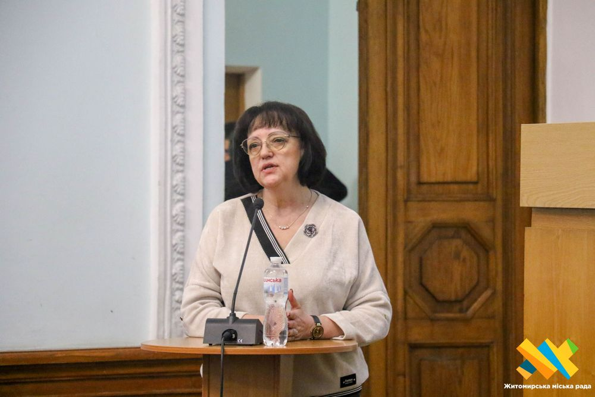

Новина 1
Депутати Житомирської міської ради ухвалили рішення про виділення коштів із міського бюджету для доплат педагогічним працівникам. На підтримку освітян спрямували 13,6 млн грн для працівників дошкільних навчальних закладів, 0,9 млн грн — для педагогів приватних шкіл та 0,5 млн грн — для наукових ліцеїв.